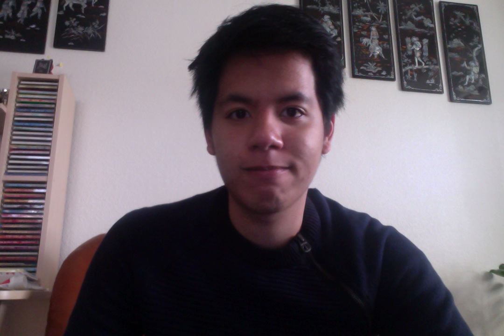

Mitt namn är Jan Tran och jag är 21 år. Jag har nämligen flyttat ut mig från Katrineholm till Kalmar för att utbilda mig inom dataventeskapligaämnen. Tanken var att jag ville skapa spelorienterade applikationer eller webbsidor. Jag har stora drömmar att
göra någoting stort med mitt yrke och att jag gör någonting stort och att vara en del i media. Jag har stora politiska intressen som har uppkommit under den tiden efter gymnasiet.Det hände så att under min tid i gymnasiet kände som att jag
blev avskärmad från verkligheten. Jag har många intressen i livet, det som är tyngst är ju Tv-spel, då jag var som liten satt framför Tv varje dag, spela lite övertid bara att få de extra 10 minuter. Spel är någonting jag uppskattar verkligen
och det har också varit stor del av halva mitt liv och mina drömmar. Jag spelade mycket med många kända titlar som Crash Bandicoot,Nintendos karaktärer och final fantasy. Utan spel skulle jag inte vara så lika bra på engelska om jag hade gått
på lektionerna. Det som jag är bra på är mycket med estetiska ämnen som musik och målningar. Jag vill ju använda min målning till spel där jag kan både programmera men även illustrera mitt verk.Jag själv är väldigt aktiv person då jag tränar
nästan varje dag för att förbättra mina begränsningar, men även lindra stressen för att kunna lösa svårighetersfrågor eller test.Innan jag pluggade vidare till Linneuniversitet så gick jag under min gymnasiet tiden i samhällvsetenskapsprogrammet,
vilket är inte olikt från lågstadiet,inklusive djupare frågor kring samhälle. Min lärdom där fick jag en ny perspektiv hur man ser på problemen då allting är inte svart och vitt. Det var roligt att studera där, fast det var inte någonting
jag gillade att gch det ledde ingen vart i arbetslivet.Så därför valde jag Linneuniversitet då jag ville verkligen ta seriöst med min utbildning,samt ha nöje till att skapa mina egna projekt och få vidkännande.
Tidigare arbetslivserfarenhet har jag mycket från praktik då idag i Sverige är det riktigt svårt att få jobb utan någon slags av kontakter, det påverkar inte mig mycket rent psykologisk men jag ville verkligen ut i arbetslivet, eftersom jag
var utåtriktad så beslutade jag att bege mig till Norge,där jag har en bekant som jobbade med bagarier "Baker Hansen". Tiden där var väldigt häftigt då arbetskamrater var inte bara från Norge utan även andra kontinenter. Fick lära mig en massa
folk, och hur företagskulturen fungerade där. Jag har inte så mycket tidigare erfarenheter av att programmera när jag applicera mig in på Ud. Jag fastnade mig väldigt mycket på problemen som jag själv kunde inte lösa,anledningen till att jag
vill gå in på universitet för att utbilda mig även träffa potentiella medarbetare som kan supporta mig genom svårigheter. Mina tankar i framtiden är att jag vill bli framgångsrik, pengarna går till att jag kan njuta av mitt liv utan att jag
behöver oroa mig inför framtiden, men jag vill kämpa mig dit och inte fuska mig igenom. Så jag har överanalyserat spelmarknaden och människornas beteende gentemot appar och Iphone. Största spelmarknaden idag är appar och jag är förberedd på
förändringar, då intressen på mobilaapplikationer kanske inte håller längre än 10 år vem vet. Jag vill att jag ska trivas med mitt jobb i framtiden. Det jag menar är att istället för att tycka att jobb är tråkigt vill jag istället vilja dit
istället för hem. Vad har jag för personlighet? Det är ganska olika beroende på vilken grupp man är vid, men det var så sen jag gick under gymnasiet. Det var en tid då jag inte riktigt hittade min identitet, visste inte om jag var verkligen
realist eller en som introvert, det är en svår fråga att besvara. Jag hittade min identitet tillslut och jag blev mer lyckligare om mig själv som ledde mig vidare i livet.
Så det var en liten del av min resa.Nästa äventyr! Tack För mig!